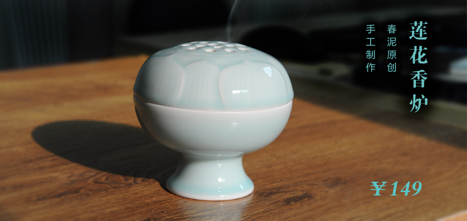
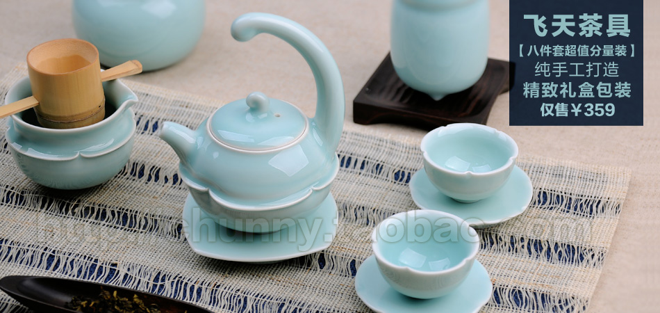

<div id="slides">
	<ul>
		<li class="slide" style="opacity:1;filter:alpha(opacity=100)">
			<div class="img-wrapper">
			<a href="#"></a>
			</div>
		</li>
		<li class="slide" style="opacity:0;filter:alpha(opacity=0)">
			<div class="img-wrapper">
			<a href="#"></a>
			</div>
		</li>
		<li class="slide" style="opacity:0;filter:alpha(opacity=0)">
			<div class="img-wrapper">
			<a href="#"></a>
			</div>
		</li>
		<li class="slide" style="opacity:0;filter:alpha(opacity=0)">
			<div class="img-wrapper">
			<a href="#"></a>
			</div>
		</li>
		<li class="slide" style="opacity:0;filter:alpha(opacity=0)">
			<div class="img-wrapper">
			<a href="#"></a>
			</div>
		</li>
	</ul>
	<ul class="slide_tags">
		<li class="slide_tag tag_current">1</li>
		<li class="slide_tag">2</li>
		<li class="slide_tag">3</li>
		<li class="slide_tag">4</li>
		<li class="slide_tag">5</li>
	</ul>
</div>

<script type="text/javascript">
YUI().use('node', 'transition', function(Y){
	var len=5;
	var nCurSlide=1,nLastSlide=0;
	var aSlideList=Y.all('.slide');
	var aTags=Y.all('.slide_tag');
	var hInterval=setInterval(displayNext, 2500);
	function displayNext(){
		aSlideList.item(nLastSlide%len).transition({
			duration: 0.8,
			opacity: 0
		});
		aTags.item(nLastSlide%len).removeClass('tag_current');
		aSlideList.item(nCurSlide%len).transition({
			duration: 0.8,
			opacity: 1
		});
		aTags.item(nCurSlide%len).addClass('tag_current');
		nLastSlide++;
		nCurSlide++;
	}
	function skipThisSlide(e){
		var oTags=e.target;
		var nTagIdx=aTags.indexOf(oTags);
		for(var nTagItor=0;nTagItor<len;nTagItor++){
			if(nTagItor===nTagIdx){
				aSlideList.item(nTagItor).setStyle('opacity',1);
				aTags.item(nTagIdx).addClass('tag_current');
			}else{
				aSlideList.item(nTagItor).setStyle('opacity',0);
				aTags.item(nTagItor).removeClass('tag_current');
			}
		}
		nCurSlide=(nTagIdx+len)%len;
		nLastSlide=(nTagIdx+len-1)%len;
	}
	for(i=0;i<len;i++){
		aTags.item(i).on('mouseover', skipThisSlide);
		aTags.item(i).on('click', skipThisSlide);
	}
});
</script>
